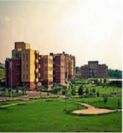

|  | Comsats Institute Of Information Technology |
||||
|---|---|---|---|---|---|
|
In this technology pervasive environment, the attainment of higher education is becoming a much sought after goal of the youth of the nation. I am positive that for the academic and research pursuits, COMSATS Institute of Information Technology (CIIT) is the most preferred destination for the best students, teachers, researchers and scholars. Our motto: ‘join the best to bring out the best.’ Since its establishment in 2000, the CIIT has always been at the forefront of innovations and has played an active part in shaping the modern day higher education. It has approximately 9000 full time students studying a wide range of undergraduate, postgraduate and research degree programs. By offering a broad range of disciplines the CIIT encompasses the issues that are of real interest to professionals, prospective employers and to you as students. Our institution has more than 900 academic and active research staff. Many of our faculty are academics of world renown and they are doing research at the cutting edge of the respective disciplines. The expertise is reflected in our teaching and has made this institution a credible center of excellence both in quality teaching and research. The CIIT is one of the largest and fastest growing research oriented institutions in Pakistan. During 2007, the CIIT earned the singular honor of being ranked at number 5 among 124 institutions of higher education in the country on account of research output by its qualified faculty. Similarly among the Engineering disciplines, the CIIT was ranked at number eight in the country. Our commitment to the advancement of knowledge and our remarkable achievements in research in evidence of our success. This success has led to the increasing number of students joining the CIIT every year. |
||||
| © All Rights Resreved |
|||||